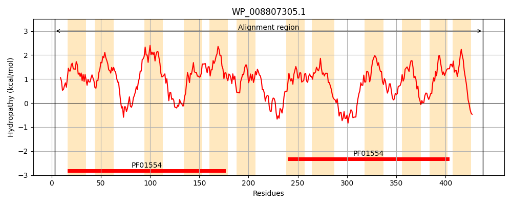
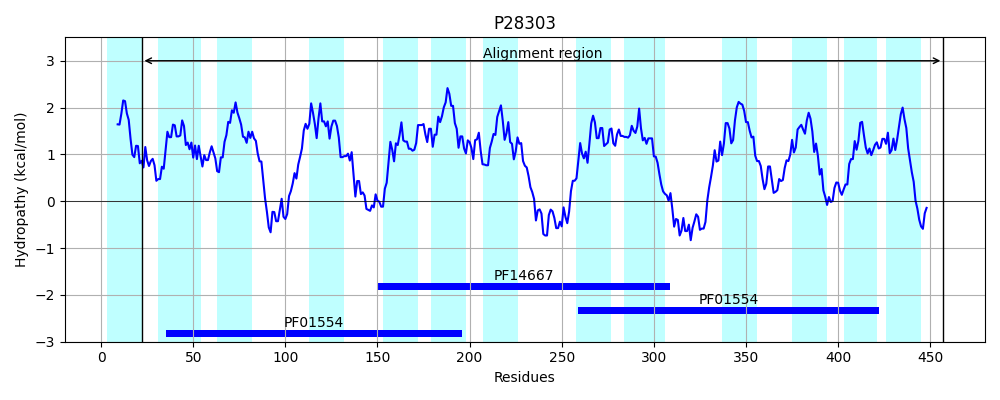
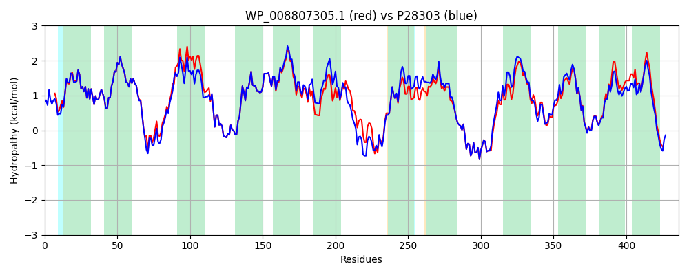

Hit Accession: P28303
Hit TCID: 2.A.66.1.4
Hit Description: gnl|BL_ORD_ID|9638 gnl|TC-DB|P28303|2.A.66.1.4 DNA-DAMAGE-INDUCIBLE PROTEIN F - Escherichia coli.
Mach Len: 436
e:0.000000
Query TMS Count : 12
Hit TMS Count: 13
TMS-Overlap Score: 12.050000
Predicted Substrates:CHEBI:3098;bile acid
BLAST Alignment:
Score: 1916 , Bit scores: 742 bits, E-value: 0.0e+00, Alignment length: 436, Percentage identity: 86
Query: 3 LNAADKALWRLAIPMIFSNITVPLLGLVDTAVIGHLDSPVYLGGVAVGATATSFLFMLLLFLRMSTTGLTAQAWGAKDPLRLARALVQPLALALGAGVLIILFRLPLINLALHIVGGSEAVLEQARRFLEIRWLSAPASLANLVLLGWLLGVQYARAPVILLVVGNLLNIVLDLWLVMGLRMNVQGAALATVTAEYATLIIGLMMAKRVLTLRGVSLAMLKNAWRGDLRRLLALNRDIMLRSLLLQLCFGALTVYGARLGSDIVAVNAVLMTMLTFTAYALDGFAYAVEAHSGQAYGARDGSQLLEVWRAACRQSGMVALAFALIYSLAGEYIIALLTSLPSLQQLADRYLIWQAILPVVGVWCYLLDGMFIGATRGAEMRNSMAVAAAGFAVTLLSVPLLGNHGLWLALAVFLALRGLSLALIWRRHWRHGTWFS 438
L ++DKALW LA+PMIFSNITVPLLGLVDTAVIGHLDSPVYLGGVAVGATATSFLFMLLLFLRMSTTGLTAQA+GAK+P LAR LVQPL LALGAG LI L R P+I+LALHIVGGSEAVLEQARRFLEIRWLSAPASLANLVLLGWLLGVQYARAPVILLVVGN+LNIVLD+WLVMGL MNVQGAALATV AEYATL+IGL+M +++L LRG+S MLK AWRG+ RRLLALNRDIMLRSLLLQLCFGA+TV GARLGSDI+AVNAVLMT+LTFTAYALDGFAYAVEAHSGQAYGARDGSQLL+VWRAACRQSG+VAL F+++Y LAGE+IIALLTSL +QQLADRYLIWQ ILPVVGVWCYLLDGMFIGATR EMRNSMAVAAAGFA+TLL++P LGNH LWLAL VFLALRGLSLA IWRRHWR+GTWF+
Sbjct: 22 LTSSDKALWHLALPMIFSNITVPLLGLVDTAVIGHLDSPVYLGGVAVGATATSFLFMLLLFLRMSTTGLTAQAYGAKNPQALARTLVQPLLLALGAGALIALLRTPIIDLALHIVGGSEAVLEQARRFLEIRWLSAPASLANLVLLGWLLGVQYARAPVILLVVGNILNIVLDVWLVMGLHMNVQGAALATVIAEYATLLIGLLMVRKILKLRGISGEMLKTAWRGNFRRLLALNRDIMLRSLLLQLCFGAITVLGARLGSDIIAVNAVLMTLLTFTAYALDGFAYAVEAHSGQAYGARDGSQLLDVWRAACRQSGIVALLFSVVYLLAGEHIIALLTSLTQIQQLADRYLIWQVILPVVGVWCYLLDGMFIGATRATEMRNSMAVAAAGFALTLLTLPWLGNHALWLALTVFLALRGLSLAAIWRRHWRNGTWFA 457 | Protein Hydropathy Plots: |
|---|
|  |  |
Pairwise Alignment-Hydropathy Plot:
|
|---|
|  |